Download the files from this tutorial.
|
This tutorial is for Processing version 1.0+. If you see any errors or have comments, please let us know. Many of the tutorials for Processing concentrate on what the language can do (change colors, draw shapes, create arrays of objects) and which function calls will let you accomplish these tasks. These are things you need to know in order to write a program in Processing. There’s one piece of the puzzle that these tutorials don’t address: how do you analyze a problem and break it down into steps that the computer can do? In this tutorial, I’m going to show you what went through my head as I took on the task of writing functions to draw regular polygons and star-shaped figures in Processing. This is a good choice because the task is not too big to get your mind around, but it’s not an entirely trivial problem, either. Remember that what you are seeing here is my particular thought process and programming style. There are many different approaches and styles. As you continue programming, you will find your own. You can also see other people’s programming stye (though not their thought process!) by looking at the source code for the programs at openProcessing.org. Drawing Regular PolygonsYou wouldn’t think of building a house without a blueprint, and you shouldn’t think of writing a program without a plan of some sort. Since Processing is such a visual language, I always have to sketch out what I want as a result before I approach the keyboard. So that’s where I started. Step 1: Planning on paperThe first step was to draw a crude diagram to dredge up old memories of how regular polygons work. The hexagon was the first one I drew. As you can see from the little loop I drew inside the hexagon, the center angles of all the slices add up to a complete circle, or 360°, and the “radius” of the polygon is a line from the center to each vertex. The angle between each of the radius lines is thus 360° divided by the number of sides. 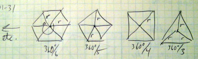 I just needed to get an idea of what the task was, and a hand-drawn diagram did the job. I didn’t need to generate the diagram in a drawing program.
Step 2: Some basic trigonometrySo, if you have a line of length r starting at (0,0) at an angle theta (θ), what are its coordinates in terms of x and y? If you know a little bit of trigonometry, the answer is that the endpoint of the line is at (r cos θ, r sin θ). If you don’t know trigonometry, take a look at this tutorial (a general and very light introduction to trigonometry), this tutorial (oriented towards Processing), and this example from chapter 13 of Learning Processing. In the following diagram, angles are drawn clockwise, which is how they are measured in Processing. 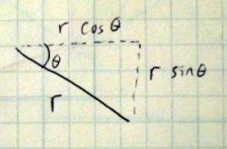 Step 3: Design Decisions
It looks like this is a job for a The problem with drawing a group of lines is that they are just lines—you
don’t get a true shape that you can fill, like Since you probably want to draw many polygons during a program, it makes sense
to have a
void setup()
{
size(300, 300);
background(255);
smooth();
noFill();
polygon(3, 50, 75, 50);
polygon(4, 170, 75, 50);
fill(255, 204, 255);
stroke(128, 0, 128);
polygon(5, 50, 180, 50);
noFill();
stroke(0);
polygon(6, 170, 180, 50);
}
void polygon(int n, float cx, float cy, float r)
{
float angle = 360.0 / n;
beginShape();
for (int i = 0; i < n; i++)
{
vertex(cx + r * cos(radians(angle * i)),
cy + r * sin(radians(angle * i)));
}
endShape(CLOSE);
}
Two Steps Forward, One Step Back
The program works, so it’s time to see if there are things that
could be added or changed. First, the triangle and pentagon seem
somehow wrong; they are usually drawn pointing upwards instead of
to the side. The reason they look odd is that the first vertex
(at 0°) points to the right instead of straight up. It
would be nice to have an extra parameter that gives the starting
angle for the first vertex. (Another solution is to leave things
as they are and let programmers use
My next thought was that it would be nice to be able to specify a
width and height for the polygon, much as you do with an
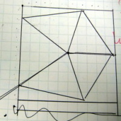
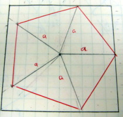
Well, that was a dead end. That sort of thing happens in programming all
the time, so I didn’t spend too much time worrying about it.
It was time for another approach. Since I didn't have an accurate way of
drawing ellipses, I had to think about the problem a different way. Presume
you have a circle drawn on a square sheet of rubber, and you stretch it out
so that it’s twice as wide but the same height. The vertical position of
the points on the circle does not change, but the horizontal positions are now
twice as far away from the center as they used to be. The same idea applies
if you stretch the sheet vertically. The
following crude drawings seemed to bear this out,
so it was time to rewrite the 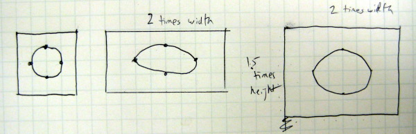 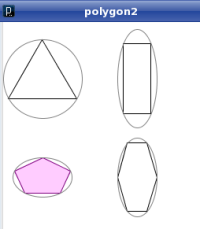
void setup( )
{
size(300, 300);
background(255);
smooth();
noFill();
polygon(3, 50, 75, 100, 100, -PI / 2.0); // -90 degrees
polygon(4, 170, 75, 50, 125, -PI / 4.0); // -45 degrees
fill(255, 204, 255);
stroke(128, 0, 128);
polygon(5, 50, 200, 75, 50, -PI / 2.0); // -90 degrees
noFill();
stroke(0);
polygon(6, 170, 200, 50, 100, 0);
stroke(128);
// draw enclosing ellipses to make sure we did it right
ellipse(50, 75, 100, 100);
ellipse(170, 75, 50, 125);
ellipse(50, 200, 75, 50);
ellipse(170, 200, 50, 100);
}
void polygon(int n, float cx, float cy, float w, float h, float startAngle)
{
float angle = TWO_PI/ n;
/* The horizontal "radius" is one half the width;
the vertical "radius" is one half the height */
w = w / 2.0;
h = h / 2.0;
beginShape();
for (int i = 0; i < n; i++)
{
vertex(cx + w * cos(startAngle + angle * i),
cy + h * sin(startAngle + angle * i));
}
endShape(CLOSE);
}
Since everything was in radians, I now described
angles in terms of Too Many Parameters
I now had a much more flexible function for drawing polygons, but
it came at the expense of more parameters. It would be nice to be
able to draw the ordinary case (equal width and height, start angle
of zero) without having to specify all those parameters. The solution
is to overload the function. In Processing, you can have
two functions with the same name, as long as they have different
numbers of parameters and/or types of parameters. An example of
this is Processing’s
Here is the code to add to the previous example. When you give
void polygon(int n, float cx, float cy, float r)
{
polygon(n, cx, cy, r * 2.0, r * 2.0, 0.0);
}
And here is some code to test the overloaded function. 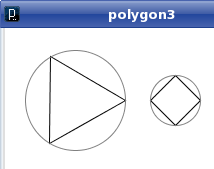
void setup()
{
size(300, 300);
background(255);
smooth();
noFill();
polygon(3, 70, 75, 50); // use the defaults
polygon(4, 170, 75, 25);
stroke(128);
// draw enclosing ellipses to make sure we did it right
ellipse(70, 75, 100, 100);
ellipse(170, 75, 50, 50);
}
Safe Computing
What happens if someone tries to draw a polygon with 2 sides, 1 side,
or worse, 0 sides? The first two will generate a line and a point,
but the third one will cause a division by zero error when trying to
figure out the angle. And what would happen with negative numbers?
Since polygons with fewer than three sides
don’t make a lot of sense, I wrapped the body of the
void polygon(int n, float cx, float cy, float w, float h, float startAngle)
{
if (n > 2)
{
float angle = TWO_PI/ n;
.
.
beginShape()
.
.
endShape(CLOSE);
}
}
Drawing Stars
Now that I was satisfied with the
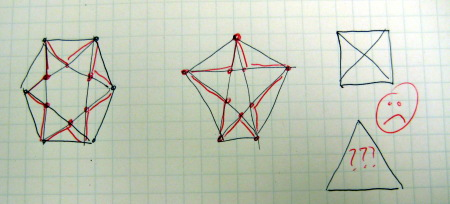
I saw two problems here. First, finding the intersection point of two lines is a lot of calculation. Not particularly hard calculation, but a lot of it, and it gets tricky when you have vertical lines. Second, I couldn't have a four-sided or three-sided arrow shape; there weren’t enough diagonals. Then, I had another idea. I can’t tell you where the idea came from or how I arrived at it; it just hit me. That’s a part of the process that I don’t think can be taught. Here was the idea: What if you had a polygon cut out of cookie dough and you sort of pushed in the sides to make a star shape? That is a method that works for squares and triangles.
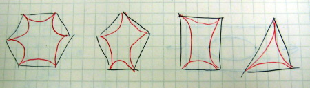
When you push in the sides, you push them in at the midpoint so that you get a nice symmetric cookie. From there, it wasn’t a big leap to figure out: “what if I had a shorter radius at half of every slice of the polygon?”
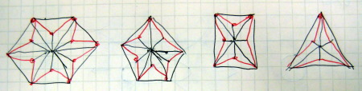
This code would be fairly easy to write. I would need one extra
parameter: the proportion of the small radius to the
big radius. In the following code, an
void setup( )
{
size(300, 300);
background(255);
smooth();
noFill();
star(3, 60, 75, 100, 100, -PI / 2.0, 0.50); // -90 degrees
star(4, 170, 75, 25, 0.50); // use simpler call
fill(255, 204, 255);
stroke(128, 0, 128);
star(5, 60, 200, 75, 50, -PI / 2.0, 0.50); // -90 degrees
noFill();
stroke(0);
star(6, 170, 200, 50, 100, 0, 0.50);
stroke(128);
// draw enclosing ellipses to make sure we did it right
ellipse(60, 75, 100, 100);
ellipse(170, 75, 50, 50);
ellipse(60, 200, 75, 50);
ellipse(170, 200, 50, 100);
}
void star(int n, float cx, float cy, float r, float proportion)
{
star(n, cx, cy, 2.0 * r, 2.0 * r, 0.0, proportion);
}
void star(int n, float cx, float cy, float w, float h,
float startAngle, float proportion)
{
if (n > 2)
{
float angle = TWO_PI/ (2 *n); // twice as many sides
float dw; // draw width
float dh; // draw height
w = w / 2.0;
h = h / 2.0;
beginShape();
for (int i = 0; i < 2 * n; i++)
{
dw = w;
dh = h;
if (i % 2 == 1) // for odd vertices, use short radius
{
dw = w * proportion;
dh = h * proportion;
}
vertex(cx + dw * cos(startAngle + angle * i),
cy + dh * sin(startAngle + angle * i));
}
endShape(CLOSE);
}
}
What Went Wrong?When I ran this program, I just freaked out. Everything looked great, except for the three-sided star. How come I didn’t get a star from it? The code sure looks correct, so I decided to see what would happen if I drew the diagram by hand. I measured the angles with my protractor, and I drew the long radius lines with a length of two inches in black and the short radius lines with a length of one inch in red. Sure enough, it just so happens that the endpoints of the short radius lines are right on the lines of the main triangle. The program is drawing a star, with the sides pushed in by zero.
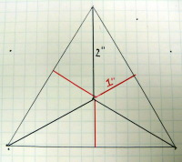
While wondering why this happened, I remembered that the cosine of the angle between the lines, 60° (π/3) comes out to 0.5, and I strongly suspected that this had something to do with it. To test my hypothesis, I changed the square to use a proportion of cosine of 45° (π/4), the pentagon to cosine of 36° (π/5), and the hexagon to cosine of 30° (π/6). Sure enough, they all came out with no push-in. So, if you are drawing a star with n sides and you set the proportion for the short radius to long radius to the cos(π/n), you get a non-star star! I still can’t write a mathematical proof of it, but it is an interesting result. I don’t consider that side trip of writing the test program to be wasted time; I did learn something new and mildly interesting, and it may turn out to be useful in the future.
Of course, the way to get a three-sided star is to set the proportion to an amount less than 0.5, which I did in the following setup code, with much better results. I also changed the proportions for the other stars just to see what they would look like. 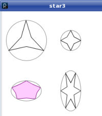
void setup()
{
size(300, 300);
background(255);
smooth();
noFill();
star(3, 60, 75, 100, 100, -PI / 2.0, 0.3); // -90 degrees
star(4, 170, 75, 25, 0.5); // use simpler call
fill(255, 204, 255);
stroke(128, 0, 128);
star(5, 60, 200, 75, 50, -PI / 2.0, 0.75); // -90 degrees
noFill();
stroke(0);
star(6, 170, 200, 50, 100, 0, 0.4);
stroke(128);
// draw enclosing ellipses to make sure we did it right
ellipse(60, 75, 100, 100);
ellipse(170, 75, 50, 50);
ellipse(60, 200, 75, 50);
ellipse(170, 200, 50, 100);
}
Using the FunctionsFinally, in order to use the functions in something other than a test, I decided to write a program that would randomly generate polygons and stars. The window is 300 by 300, and the stars or polygons have a radius of 24 dots, so I have five rows and five columns (the extra dot is for spacing). Remember how I said that knowing the proportions that would create a star “may turn out to be useful in the future”? Well, they aren’t just useful for this program—they’re vital. When I generate a star, I need to make sure it really has a star shape, so I have to keep the proportion of short to long radius less than the cosine of π divided by the number of sides. Here is the code for
void setup()
{
size(300, 300);
background(255);
frameRate(6);
smooth();
rectMode(CENTER);
}
void draw()
{
// choose a random stroke color
int r = int(random(0, 255));
int g = int(random(0, 255));
int b = int(random(0, 255));
// and fill opacity
int opacity = int(random(100, 255));
int nSides = int(random(3, 9));
// determine the center x and y coordinates
int cx = 25 + 50 * int(random(0, 6));
int cy = 25 + 50 * int(random(0, 6));
// if a random number (0 or 1) is 0, draw a polygon;
// otherwise, draw a star
boolean isPolygon = int(random(2)) == 0;
// for stars, you need the proportion of short to long radius
float proportion;
stroke(255); // erase any previous drawing in this area
fill(255);
rect(cx, cy, 50, 50);
stroke(r, g, b);
fill(r, g, b, opacity);
if (isPolygon)
{
polygon(nSides, cx, cy, 24);
}
else
{
proportion = random(0.2, 0.8) * cos(PI / nSides);
star(nSides, cx, cy, 24, proportion);
}
}
Polygons and Stars as Objects
Now that I have working functions for polygons and stars, it might
be useful to make a Summing Up
This tutorial has shown you the things you never see in books.
In a book, all the diagrams are
picture perfect. You see a sample program, and it just works, and
it produces gorgeous results. To be fair, the authors
can’t show you their thought process; otherwise,
their books would be ten times as large. In fact, I did not include
all the versions where a misplaced parenthesis or a forgotten call
to |